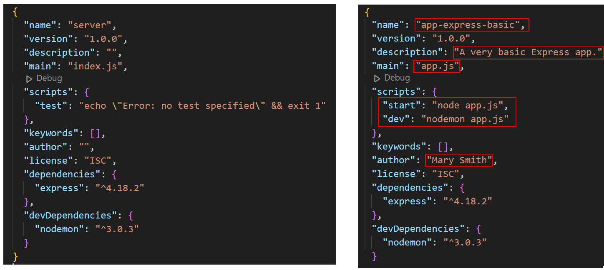
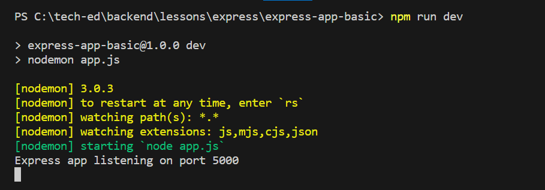

Learning Goals
At the end of this Tutorial, you will be able to:
- Create a basic app with Node.js and the Express module that can listen to browser requests and send a response to the browser.
About Express
Express is a Node.js web application framework that makes it easier to write, update, and read APIs. Express can help with all client-server interactions, including:
- Complex routing
- POST requests
- Server-side logic
An Express-powered app, built on top of Node.js, can interface with nearly any database. You may use any user authentication scheme you wish.
Creating a folder structure
Begin by creating a folder structure for your Express-powered app. See below.

Some developers name the two folders for a full-stack app as /frontend and /backend. And sometines the /server or /backend folder will be named /api or /apis.
Creating a basic Express app
Follow the steps below. You must have Node.js installed on your machine.
- Open a Command prompt or VS Code Terminal, and navigate to the folder that will hold your app. For example:
cd apps-express/app-express-basic/server - Run the following command to create a package.json file for your new app.
npm init -y
The package.json file will look as follows.
- Install the Express module locally:
npm i express - Next, install the nodemon module locally as a dev dependency:
npm i --save-dev nodemon
You will now see that a /node_modules sub-folder with over 700 files has been created within your /server folder.
- Open your package.json file. It should should look similar to that shown below on the left. Update this file as shown below on the right, and save the file. 
- Create a new text file, paste in the following code, and save the file as app.js in your app directory:
In this example, the port number is 5000. But you can use any valid port number.const express = require('express') const app = express() const port = 5000 app.get('/', async (req, res) => { // Response sent to browser res.send('Hello Web Browser!') }) app.listen(port, () => { // Outputs to terminal console.log(`Express app listening on port ${port}`) }) - Finally, in your terminal, start your new Express server:
npm run dev
Your terminal window should look as follows:
And you should see the following in your web browser for your chosen port number.

Reviewing the Express app code
Let's examine line-by-line the code for this basic Express app.
In summary, you will be using various methods of the app object, where app your named instance of an Express application.
app.method(arguments)
The app object has various properties and methods for managing the server, routes, middleware, and more.
Begin by importing the express function, which is a top-level function exported by the Express module. Assign this exported function to the variable named express.
const express = require('express')Next, call the express function, which creates and returns an Express application object. This object is stored in the variable app.
const app = express()To be able to use various methods of the app object, such as .listen(), .get(), and .post, you need to specify a port number. For example:
const port = 5000The .get() method of app takes two arguments: the route and the callback function.
app.get(<route>, <callback function(args)>)In this example, the route is the home page '/'.
app.get('/', async function(args) {
// Send a response to browser
})You could rewrite the asynchronous callback function as an arrow function.
app.get('/', async (args) => {
// Send a response to browser
})The callback function has access to the request (req) and response (res) objects, and can accept them as arguments.
app.get('/', (req, res) => {
// Send a response to browser
})Express offers a .send() method to send a response to the browser. This method is not available in 'raw' Node.js.
app.get('/', (req, res) => {
res.send('Hello Web Browser!')
})Express infers the content type and sets the content type header. Express also infers the status code.
Use the .listen() method to listen to browser requests on the chosen port.
app.listen(port);Express assumes the server name is 'localhost' and protocol is 'http'. So there is no need to enter these details.
Optionally, you can pass a callback function to the .listen() method. For example:
app.listen(port, () => {
console.log(`Example app listening on port ${port}!`)
})Now your app code is ready to handle requests with a specific method (such as GET) to a specific route (such as the home page).